콘쥬게이션 화합물과 자외선 분광법 (2)
저번 요약: 14장은 콘쥬게이션 폴리엔 화합물과 자외선 분광법에 대해 다룬다. 폴리엔은 분자 내 이중결합을 여러 개 포함하고 있는 화합물로, 이중 결합의 갯수에 따라 diene, triene, tetraene 등으로 부른다.
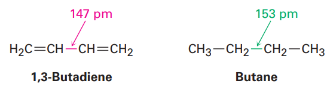
콘쥬게이션은 이중결합과 단일결합이 교대로 나타나는 분자이다. 이를 콘쥬게이션 다이엔이라고 부른다. 이는 가운데 단일 결합의 길이가 비콘쥬게이션과 비교했을 때 짧고, 더 안정한 특징이 있다. 이 이유는 원자가 결합이나 분자 오비탈 이론으로 설명할 수 있다.
이를 원자가 결합 이론에서 생각해보면, 콘쥬게이션에서는 sp2 궤도함수끼리 결합하여 더 안정해지는 것으로 볼 수 있다.
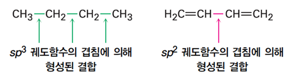
분자 오비탈 이론에 의하면 콘쥬게이션될 경우 p 오비탈 4개가 합쳐져서 방 4개(ψ1~ψ4)가 생기고, 전자들은 낮은 방(ψ1, ψ2)에만 들어가서 분자 전체에 퍼진다(delocalize) → 그래서 안정하다.
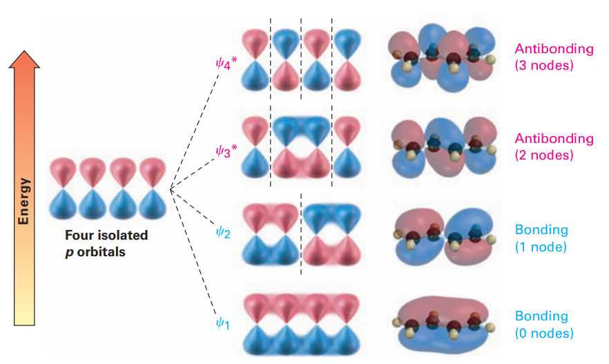
2)콘쥬게이션 다이엔에 친전자성 첨가: 알릴 탄소 양이온
다이엔에 친전자성 첨가 반응(HX or HCl)이 일어나면 혼합물이 생성된다.
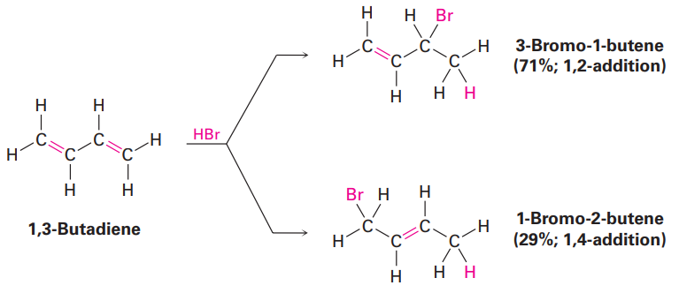
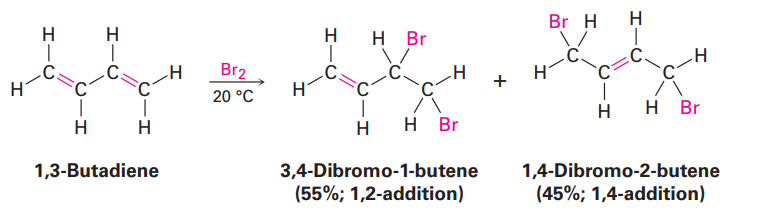
보면 1,2첨가와 1,4 첨가 생성물이 있는데, 둘이 생성되는 이유는 공명구조 때문이다.
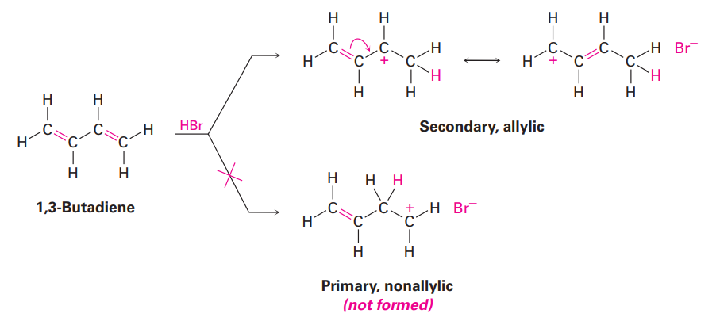
먼저 다이엔에 HBr이 접근하면, 이중결합이 깨지고 수소가 붙는다. 이때 1번의 이중결합을 깬 다음 수소가 2번에 붙던지 1번에 붙던지 할 수 있는데, 보통 1번에 붙는다(알릴=이중결합 옆의 탄소가 양전하를 가짐-이라 안정함) 일단 여기서 1첨가가 발생한다. 그런데 이 구조는 공명을 할 수 있다.
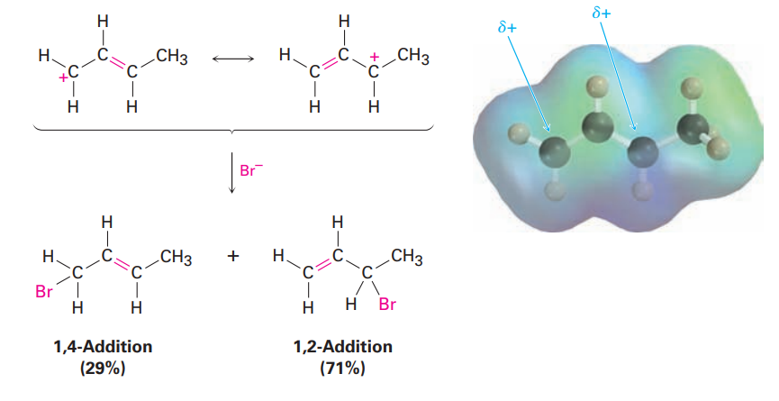
이제 1, 2첨가를 보자. 2번 탄소에 +가 있는데, 이 경우 C+는 2차 양이온이다. 반면 1,4첨가의 중간체에서 C+는 1차양이온으로, 2차가 1차보다 안정하다. 그래서 중간체는 1,2첨가가 많으므로 더 많이 생성된다. 하지만 최종 생성물의 경우 1,4가 내부 이중결합 보유로 인해 더 안정하다.
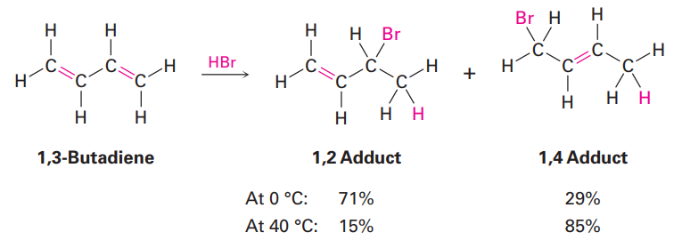
이로 인해 낮은 온도에서는 단순히 활성화에너지가 낮은 1,2첨가 생성체가 많이 생성되나 높은 온도에서는 1,4가 열역학적 지배를 받아 더 많이 생성된다.
-----------------------
4)Diels-Alder 고리화 첨가 반응
콘쥬게이션 다이엔과 콘쥬게이션 되지 않은 다이엔의 가장 뚜렷한 차이는, 콘쥬게이션 다이엔이 알켄과 첨가 반응이 일어나 치환된 사이클로 헥센 생성물을 형성하는 것이다.
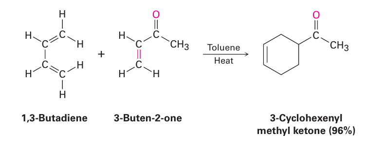
콘쥬게이션 다이엔+알켄 -> 사이클로 헥센 화합물
이를 Diels-Alder 고리화 첨가 반응이라고 부른다. 알켄의 두 개의 p오비탈과 다이엔의 말단 1, 4번 탄소의 두개의 p오비탈의 정면 겹침(시그마 결합)으로 인해 일어난다.
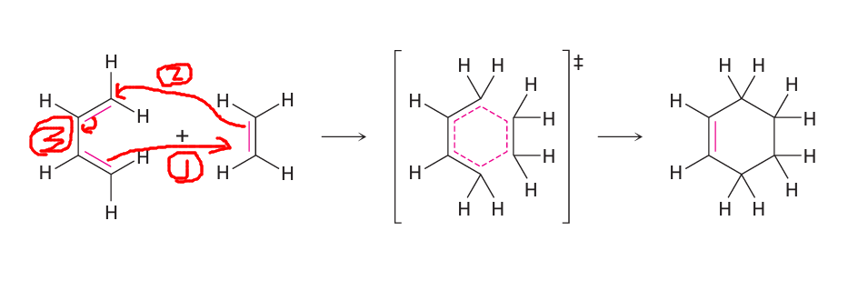
이때 알켄의 2개 탄소와 다이엔의 1, 4번 탄소는 원래는 sp2 혼성화를 하고 있었으나, 단일결합으로 바뀌게 되면서 sp3로 바뀌게 된다. 반면 2,3번 탄소는 여전히 sp2 혼성화중이다.
5) Diels-Alder 반응의 특성
Diels-Alder 고리화 첨가 반응은 알켄 성분(dienophile)에 전자-끌기 치환기가 있는 경우 가장 빠르게 일어난다. 따라서 ethylene 자체는 반응이 잘 일어나지 않지만, 여기에 전자-끌기 치환기라고 이름붙여지
–CHO (알데하이드)
–COR (케톤)
–COOH (카복실산)
–COOR (에스터)
–CONH₂ (아마이드)
(카보닐기(C=O) 포함 그룹들)
–CN (니트릴)
–NO₂ (니트로기)
–SO₂R (설폰기)
등이 붙어있다면 매우 반응이 잘 일어난다.
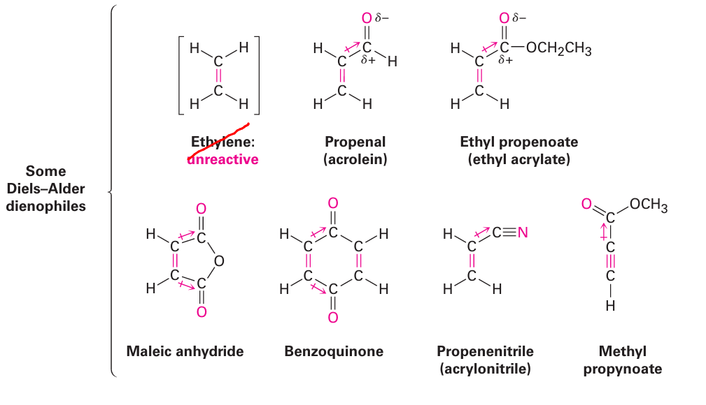
1.에틸렌에 치환기로 알데하이드가 붙은 프로페날
2.에스터기가 붙음
3.카보닐기가 있음
4.마찬가지로 카보닐기
5.니트릴기
6.에스터기
이런식으로 카보닐기의 일종이 붙거나, 그냥 O, N등 다른 전기음성도가 높은 원자가 있으면 친전자체로서 기능한다.
Diels-Alder 반응의 가장 유용한 특징 중 하나는 입체 특이성이며 이는 생성물로 단일 입체 이성질체를 형성하는 것을 의미한다. 이때 친 다이엔체의 입체화학은 생성물의 친다이엔체 부분에서 유지된다. 예를 들어 methyl Z-2-butenoate로 고리화 첨가 반응을 시키면, Z 생성물만이 얻어진다. 반대로 methyl E-2-butenoate로 반응시 생성물에서도 친전자체 부분의 배향이 E이다.
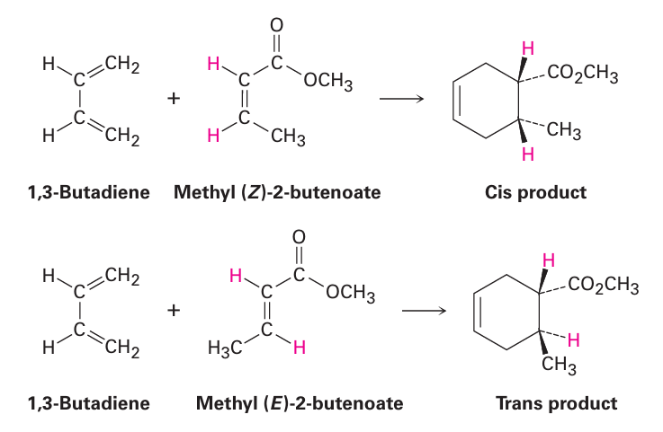
Diels-Alder 반응의 다른 입체 화학적 특성은 다이엔과 친다이엔체 상대 물질들이 외향 생성물보다는 내향생성물을 형성하도록 배향한다는 점이다. 이때 내향이나 외향이라는 것은, 고리가 2개인 화합물에서 큰 고리 기준 치환기가 같은 방향이면 내향, 다른방향이면 외향이라고 칭한다.
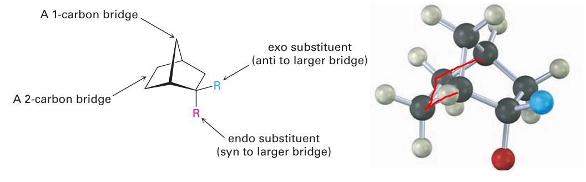
예를 들어 위와 같은 두 고리 화합물이 있을 때, 큰 다리(빨간거)는 아래쪽을 향한다. 이때 빨간 분자는 같이 아래쪽을 향하므로 내향 치환기이고, 파란 분자는 외향 치환기이다.
1,3-cyclopenta diene with maleic anhydride
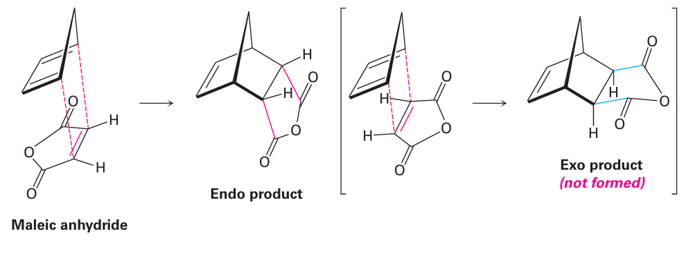
문제 14-2) 다음의 생성물을 예측하라
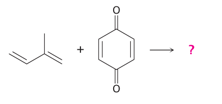
콘쥬게이션 다이엔+ HX, X2는 아니므로 다이엘 에더 반응일 것이다.
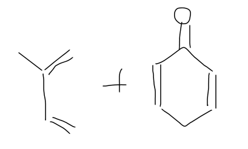
먼저 배열을 맞춰준다. 이중결합이 양 끝 오른쪽을 향하게 맞춰준다.
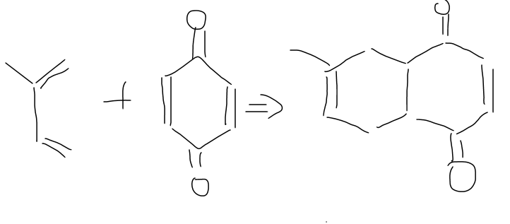
이제 이렇게 하면 되는데, 입체 화학을 맞춰줘야한다. 이때 친 다이엔체는 시스배향이므로, 똑같은 방향을 바라보게 배열해준다. 산소는 평면상에 배정되어있으므로
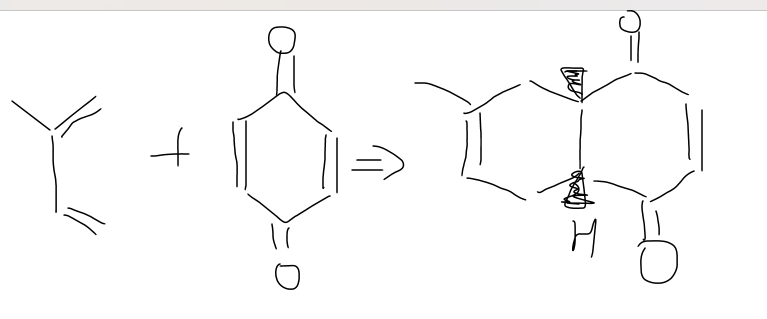
수소를 이렇게 배정해주면 된다.
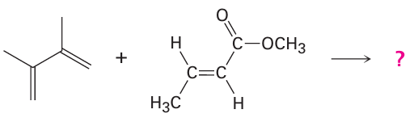
이것도 마찬가지로
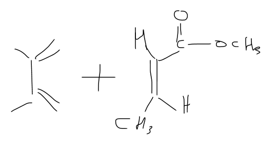 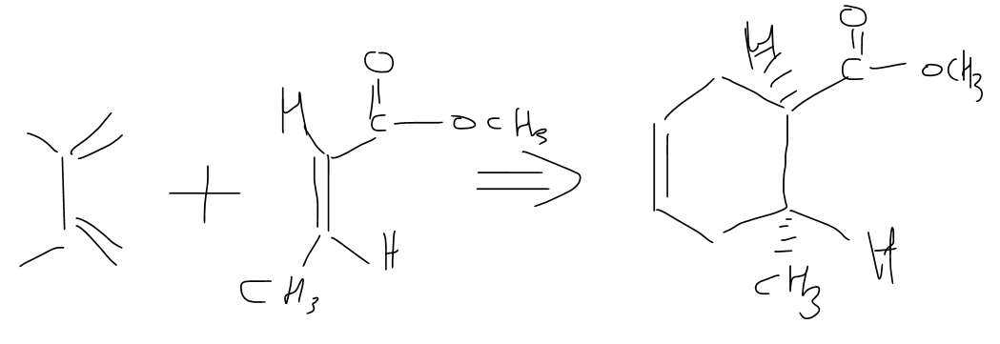
이제 친다이엔체의 입체화학을 살펴보았으니(E,Z가 그대로 유지된다.) 이번엔 다이엔을 살펴보자. 다이엔같은 경우 이중결합이 같은 방향을 향해야 한다.(오른쪽) 만약 s-트랜스 형태라면 결합이 일어날 수 없다.
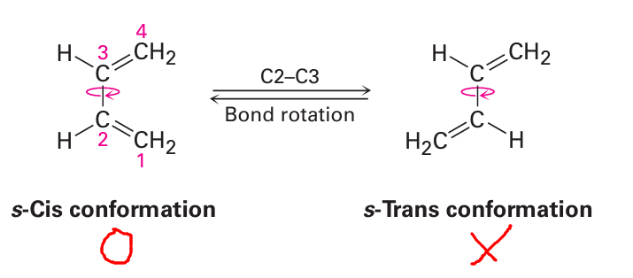
다음처럼 만약 트랜스 형태가 고정되어있거나, 또는 s 시스 형태에서 큰 입체 무리가 발생할 경우에는 Diels-Alder가 일어날 수 없다.
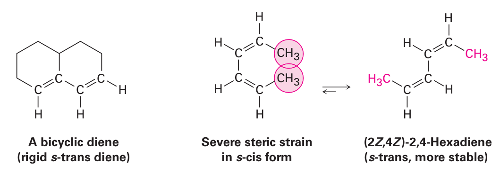
반면에, 시스형태로 고정되어 있는 다이엔체는 Diels-Alder 반응성이 너무크다. 예를 들어 다음 화합물은 자기들끼리 Diels-Alder를 한다.
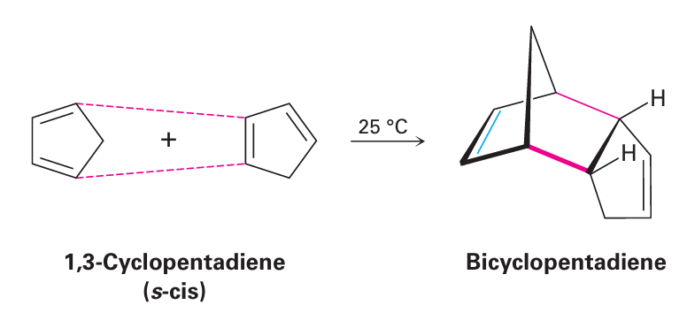
이때, 자세히보면 친다이엔체가 시스이므로, 생성물도 시스형태의 배양을 가짐을 알 수 있다. 이때 하나라도 고리가 있을 경우 결합시 다리걸친 고리형태가 된다.
또한 교재에는 없지만 다이엔 또한 입체화학적 배열에 영향을 준다.
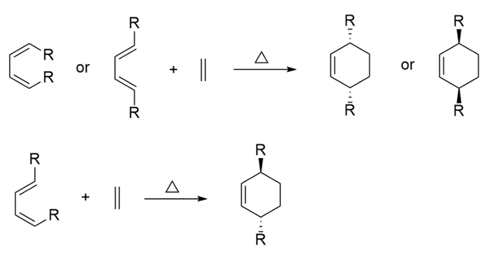
다음의 생물학적 반응을 통해 이러한 입체화학을 살펴보자.
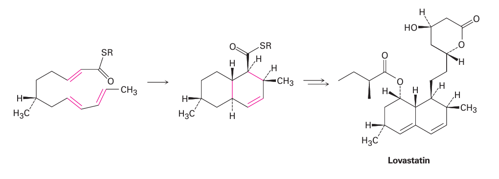
아래에 다이엔이 있고 위쪽이 친다이엔체다. 이때 친다이엔체의 R기와 밑의 다이엔의 CH3기하고 상대배향이 같다.
6)다이엔 중합체: 천연 고무와 합성 고무
콘쥬게이션 다이엔은 간단한 알켄처럼 중합될 수 있다. 개시제는 산이거나 라디칼이며, 이때 1,4 첨가 반응이 계속 일어나며 성장한다.
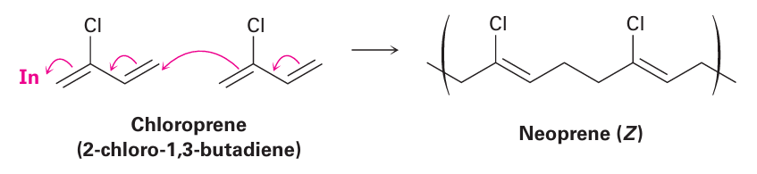
메카니즘 상세)
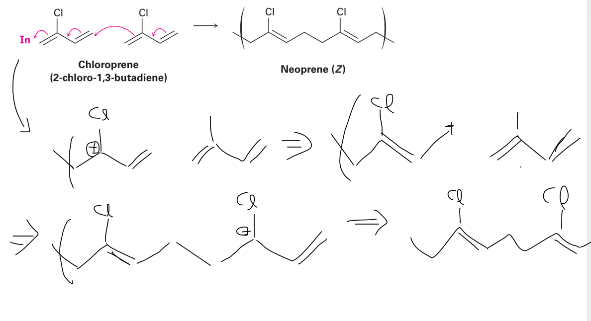
이때, 입체화학을 살펴보면 Z(시스) 구조를 가질 경우 고무처럼 말랑말랑하지만, E구조를 가지면 골프공의 재료가 될 정도로 단단해진다. Z구조를 가진 고무는 가황과정을 거쳐서 단단하게 만들기도 한다.
7)자외선 분광법
자외선 분광법은 콘쥬게이션 계에만 쓸 수 있고, 덜 사용되므로 간략하게 서술한다. 자외선 영역은 200~400nm 정도를 사용하며 유기 분자에 전자기 에너지가 조사될 때, 복사선들은 복사선의 에너지에 따라 시료에 흡수되거나 통과하게 된다. 콘쥬게이션 다이엔 중 1,3-butadiene은 다음 그림에 나타낸 바와 같이 4개의 오비탈을 가진다.
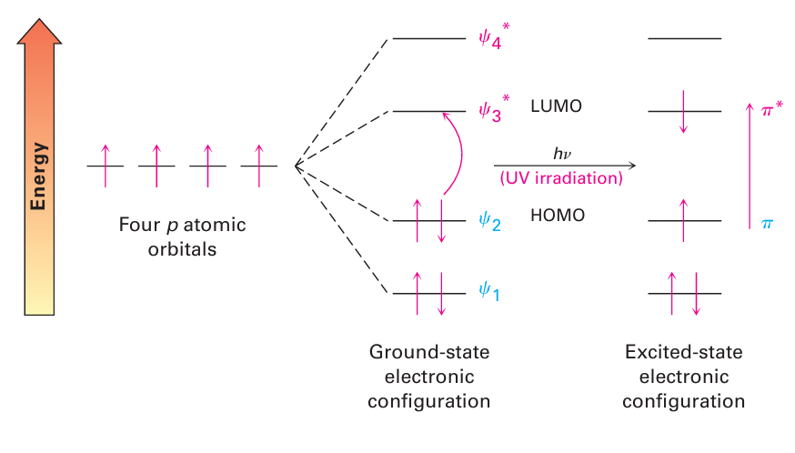
이때 자외선이 조사되면 ㅠ전자는 HOMO에서 LUMO로 이동하게 된다. 이 사이의 에너지 차이에 해당하는 파장이 흡수된다. 자외선 스펙트럼은 UV 빛의 파장을 연속적으로 변화시키며 시료에 조사하여 얻어진다. 빛의 파장이 전자를 더 높은 에너지 준위로 들뜨게 하는 데 필요한 에너지에 해당되는 경우 그 에너지는 흡수되어 검출된다.
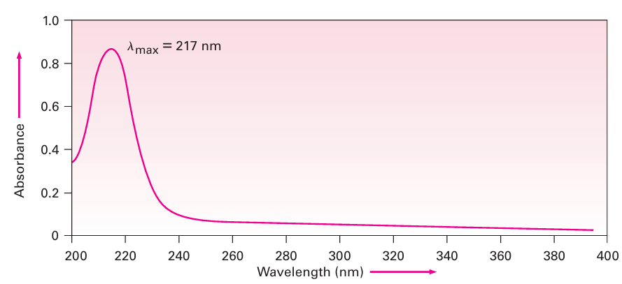
그래프의 경우 흡수도 A대 파장의 값으로 나타난다.
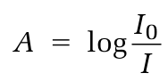 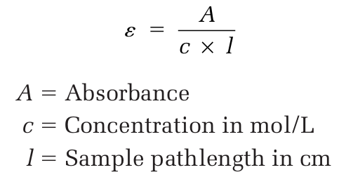 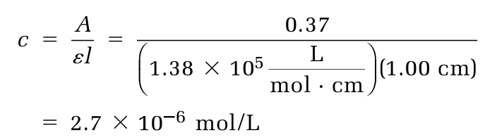
이때 중요한 것은, 흡수도와 몰 흡광계수 e를 이용하여 농도를 구할 수 있다는 것이다.
8)자외선 스펙트럼의 해석
콘쥬게이션 정도가 증가할 수록 HOMO에서 LUMO 사이의 에너지 차이가 작아지므로, 콘쥬게이션이 많이 되면 파장도 길어진다. 콘쥬게이션이 안되어있으면 흡수가 안된다.
9)콘쥬게이션과 시각화학
콘쥬게이션은 자외선 영역에서 흡수가 일어나지만 가시광선 영역에서 흡수되면 색깔로 나타난다.